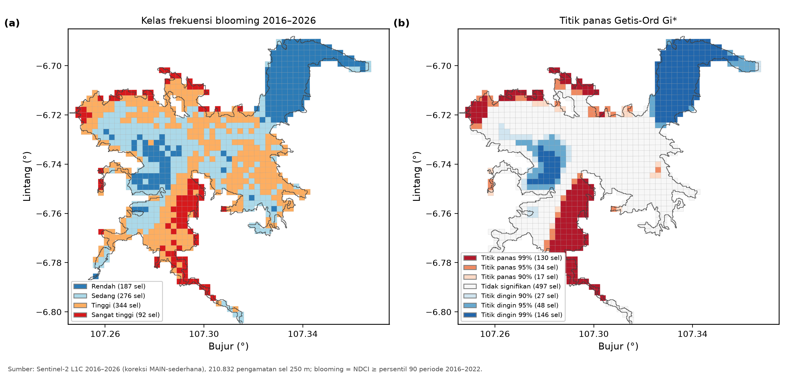
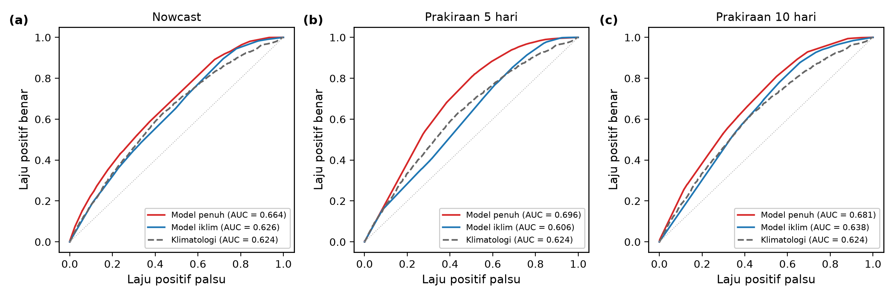
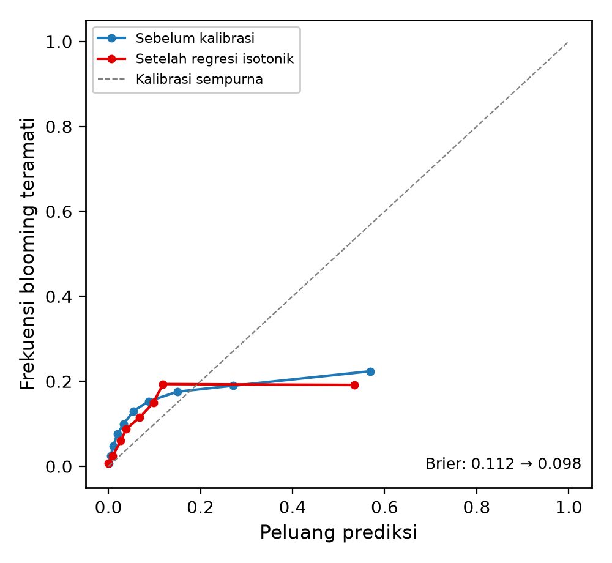
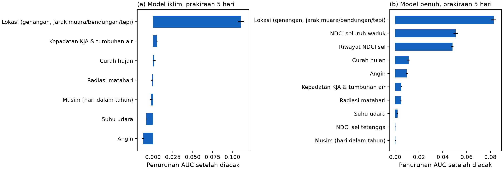
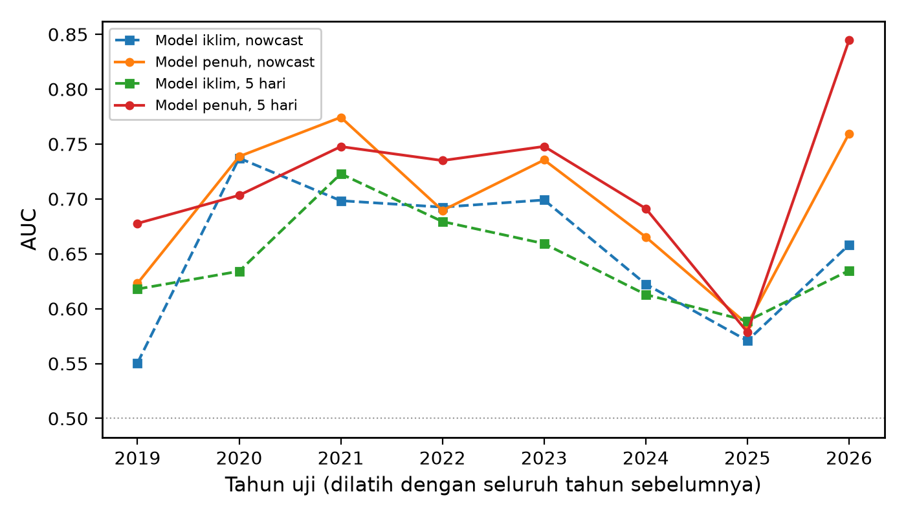
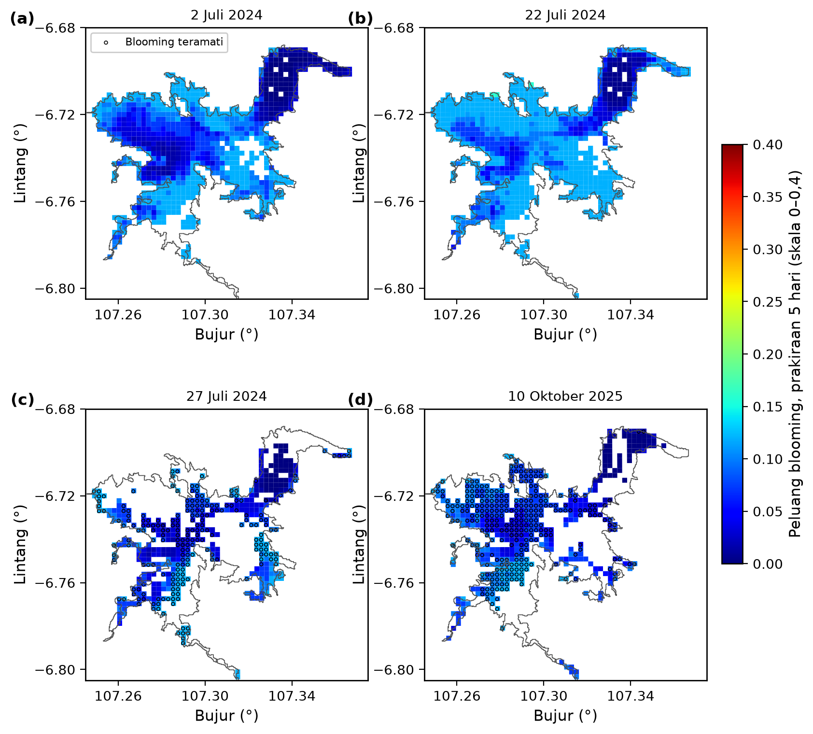
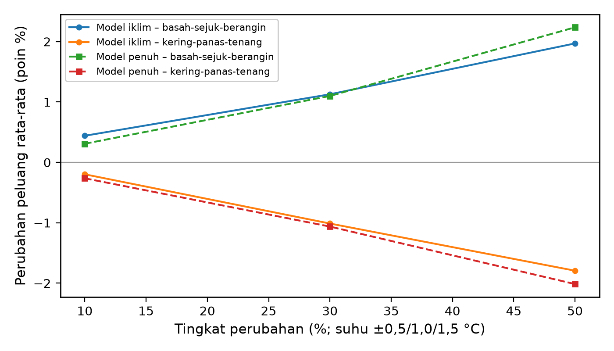
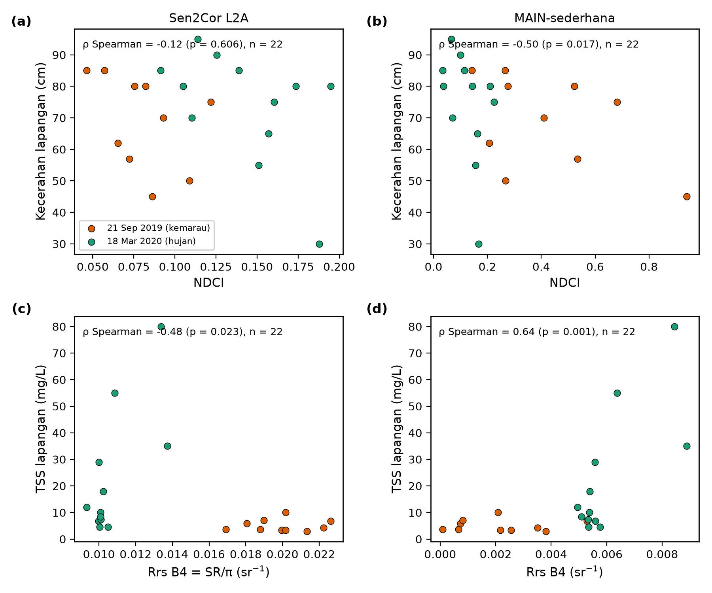

Kinerja dan validasi model peluang blooming Waduk Cirata
Label blooming: NDCI ≥ 0.296 (persentil 90 periode 2016–2022; uji kepekaan p85 = 0.246, p95 = 0.385). Pembagian waktu: latih 2016–2022, validasi 2023 (pemilihan bobot kelas dan kalibrasi isotonik), uji 2024–2026 (dipakai sekali). PR-AUC pembanding acak sama dengan prevalensi. BSS = skor Brier relatif terhadap klimatologi (positif berarti lebih baik dari klimatologi).
0. Zona rawan blooming (empiris, 2016–2026)
| kelas | sel | luas_km2 | f_rerata | kja_rerata | jarak_muara_km |
|---|---|---|---|---|---|
| Rendah | 187.000 | 10.601 | 0.020 | 0.204 | 4.344 |
| Sedang | 276.000 | 15.956 | 0.076 | 0.094 | 2.540 |
| Tinggi | 344.000 | 18.485 | 0.135 | 0.078 | 1.974 |
| Sangat tinggi | 92.000 | 4.055 | 0.246 | 0.078 | 1.501 |
| Data kurang | – | – | – | – | – |
Korelasi Spearman frekuensi blooming per sel dengan karakteristik lokasi:
| variabel | rho | p | n |
|---|---|---|---|
| kja_frac | -0.301 | 0.000 | 899 |
| jarak_muara_terdekat_km | -0.580 | 0.000 | 899 |
| jarak_citarum_km | -0.375 | 0.000 | 899 |
| jarak_bendungan_km | 0.428 | 0.000 | 899 |
| genangan_jrc | -0.431 | 0.000 | 899 |
| jarak_tepi_km | -0.248 | 0.000 | 899 |
Hubungan negatif dengan kepadatan KJA perlu ditafsirkan hati-hati: sebagian dapat disebabkan oleh tersaringnya piksel di sekitar rangka KJA, meskipun selaras dengan klorofil-a lapangan yang lebih rendah di zona KJA dibanding muara Citarum (Pratiwi dkk. 2020).
1. Kinerja pada data uji 2024–2026
| horizon | model | n | prevalensi | AUC | PR_AUC | Brier | Brier_mentah | BSS_vs_klimatologi | bobot_kelas |
|---|---|---|---|---|---|---|---|---|---|
| nowcast | M_iklim | 63079 | 0.113 | 0.626 | 0.156 | 0.103 | 0.110 | -0.025 | {0: 1, 1: 3} |
| nowcast | M_penuh | 63079 | 0.113 | 0.664 | 0.184 | 0.103 | 0.107 | -0.026 | {0: 1, 1: 3} |
| nowcast | Klimatologi | 63079 | 0.113 | 0.624 | 0.161 | 0.100 | – | – | NaN |
| nowcast | Persistensi (NDCI terakhir) | 63079 | 0.113 | 0.601 | 0.145 | – | – | – | NaN |
| 5 hari | M_iklim | 63079 | 0.113 | 0.606 | 0.149 | 0.103 | 0.107 | -0.022 | NaN |
| 5 hari | M_penuh | 63079 | 0.113 | 0.696 | 0.184 | 0.098 | 0.112 | 0.021 | {0: 1, 1: 3} |
| 5 hari | Klimatologi | 63079 | 0.113 | 0.624 | 0.161 | 0.100 | – | – | NaN |
| 5 hari | Persistensi (NDCI terakhir) | 63079 | 0.113 | 0.695 | 0.206 | – | – | – | NaN |
| 10 hari | M_iklim | 63079 | 0.113 | 0.638 | 0.154 | 0.101 | 0.124 | -0.009 | balanced |
| 10 hari | M_penuh | 63079 | 0.113 | 0.681 | 0.184 | 0.102 | 0.102 | -0.011 | NaN |
| 10 hari | Klimatologi | 63079 | 0.113 | 0.624 | 0.161 | 0.100 | – | – | NaN |
| 10 hari | Persistensi (NDCI terakhir) | 63079 | 0.113 | 0.595 | 0.138 | – | – | – | NaN |
2. Per musim
| horizon | model | n | prevalensi | AUC | PR_AUC | Brier |
|---|---|---|---|---|---|---|
| nowcast | M_iklim [kemarau_Mei_Okt] | 50048 | 0.112 | 0.626 | 0.154 | 0.103 |
| nowcast | M_iklim [hujan_Nov_Apr] | 13031 | 0.114 | 0.640 | 0.167 | 0.102 |
| nowcast | M_penuh [kemarau_Mei_Okt] | 50048 | 0.112 | 0.676 | 0.190 | 0.103 |
| nowcast | M_penuh [hujan_Nov_Apr] | 13031 | 0.114 | 0.630 | 0.174 | 0.103 |
| 5 hari | M_iklim [kemarau_Mei_Okt] | 50048 | 0.112 | 0.595 | 0.140 | 0.103 |
| 5 hari | M_iklim [hujan_Nov_Apr] | 13031 | 0.114 | 0.666 | 0.182 | 0.101 |
| 5 hari | M_penuh [kemarau_Mei_Okt] | 50048 | 0.112 | 0.723 | 0.201 | 0.098 |
| 5 hari | M_penuh [hujan_Nov_Apr] | 13031 | 0.114 | 0.631 | 0.158 | 0.101 |
| 10 hari | M_iklim [kemarau_Mei_Okt] | 50048 | 0.112 | 0.650 | 0.160 | 0.101 |
| 10 hari | M_iklim [hujan_Nov_Apr] | 13031 | 0.114 | 0.594 | 0.138 | 0.102 |
| 10 hari | M_penuh [kemarau_Mei_Okt] | 50048 | 0.112 | 0.708 | 0.202 | 0.101 |
| 10 hari | M_penuh [hujan_Nov_Apr] | 13031 | 0.114 | 0.578 | 0.144 | 0.104 |
3. Validasi bergulir per tahun
| horizon | model | tahun_uji | n | prevalensi | AUC | PR_AUC |
|---|---|---|---|---|---|---|
| nowcast | M_iklim | 2019 | 27086 | 0.150 | 0.551 | 0.164 |
| nowcast | M_iklim | 2020 | 20819 | 0.080 | 0.737 | 0.213 |
| nowcast | M_iklim | 2021 | 19508 | 0.101 | 0.698 | 0.181 |
| nowcast | M_iklim | 2022 | 16374 | 0.110 | 0.693 | 0.212 |
| nowcast | M_iklim | 2023 | 22962 | 0.054 | 0.699 | 0.094 |
| nowcast | M_iklim | 2024 | 20598 | 0.144 | 0.622 | 0.218 |
| nowcast | M_iklim | 2025 | 17119 | 0.105 | 0.571 | 0.117 |
| nowcast | M_iklim | 2026 | 25362 | 0.093 | 0.658 | 0.147 |
| nowcast | M_penuh | 2019 | 27086 | 0.150 | 0.623 | 0.204 |
| nowcast | M_penuh | 2020 | 20819 | 0.080 | 0.739 | 0.211 |
| nowcast | M_penuh | 2021 | 19508 | 0.101 | 0.774 | 0.256 |
| nowcast | M_penuh | 2022 | 16374 | 0.110 | 0.689 | 0.213 |
| nowcast | M_penuh | 2023 | 22962 | 0.054 | 0.736 | 0.113 |
| nowcast | M_penuh | 2024 | 20598 | 0.144 | 0.665 | 0.259 |
| nowcast | M_penuh | 2025 | 17119 | 0.105 | 0.586 | 0.134 |
| nowcast | M_penuh | 2026 | 25362 | 0.093 | 0.760 | 0.302 |
| 5 hari | M_iklim | 2019 | 27086 | 0.150 | 0.618 | 0.196 |
| 5 hari | M_iklim | 2020 | 20819 | 0.080 | 0.634 | 0.118 |
| 5 hari | M_iklim | 2021 | 19508 | 0.101 | 0.723 | 0.231 |
| 5 hari | M_iklim | 2022 | 16374 | 0.110 | 0.679 | 0.200 |
| 5 hari | M_iklim | 2023 | 22962 | 0.054 | 0.659 | 0.083 |
| 5 hari | M_iklim | 2024 | 20598 | 0.144 | 0.613 | 0.221 |
| 5 hari | M_iklim | 2025 | 17119 | 0.105 | 0.589 | 0.132 |
| 5 hari | M_iklim | 2026 | 25362 | 0.093 | 0.635 | 0.163 |
| 5 hari | M_penuh | 2019 | 27086 | 0.150 | 0.678 | 0.216 |
| 5 hari | M_penuh | 2020 | 20819 | 0.080 | 0.703 | 0.145 |
| 5 hari | M_penuh | 2021 | 19508 | 0.101 | 0.748 | 0.227 |
| 5 hari | M_penuh | 2022 | 16374 | 0.110 | 0.735 | 0.252 |
| 5 hari | M_penuh | 2023 | 22962 | 0.054 | 0.748 | 0.107 |
| 5 hari | M_penuh | 2024 | 20598 | 0.144 | 0.691 | 0.265 |
| 5 hari | M_penuh | 2025 | 17119 | 0.105 | 0.579 | 0.125 |
| 5 hari | M_penuh | 2026 | 25362 | 0.093 | 0.845 | 0.398 |
4. Kepentingan variabel (prakiraan 5 hari)
| horizon | model | kelompok | penurunan_AUC | sd |
|---|---|---|---|---|
| 5 | M_iklim | lokasi_tetap | 0.1107 | 0.0038 |
| 5 | M_iklim | kja_tumbuhan | 0.0051 | 0.0006 |
| 5 | M_iklim | hujan | 0.0016 | 0.0016 |
| 5 | M_iklim | radiasi | -0.0012 | 0.0013 |
| 5 | M_iklim | musim | -0.0023 | 0.0017 |
| 5 | M_iklim | suhu | -0.0084 | 0.0008 |
| 5 | M_iklim | angin | -0.0125 | 0.0010 |
| 5 | M_penuh | lokasi_tetap | 0.0828 | 0.0022 |
| 5 | M_penuh | waduk | 0.0509 | 0.0019 |
| 5 | M_penuh | riwayat_sel | 0.0482 | 0.0009 |
| 5 | M_penuh | hujan | 0.0112 | 0.0012 |
| 5 | M_penuh | angin | 0.0099 | 0.0008 |
| 5 | M_penuh | kja_tumbuhan | 0.0051 | 0.0003 |
| 5 | M_penuh | radiasi | 0.0049 | 0.0004 |
| 5 | M_penuh | suhu | 0.0020 | 0.0005 |
| 5 | M_penuh | tetangga | 0.0003 | 0.0003 |
| 5 | M_penuh | musim | 0.0002 | 0.0006 |
5. Ketidakpastian (ansambel 10 model bootstrap, prakiraan 5 hari)
| kelas | n | lebar_selang95_rerata |
|---|---|---|
| rendah (<0,1) | 42506 | 0.039 |
| sedang (0,1–0,3) | 20523 | 0.035 |
| tinggi (≥0,3) | 50 | 0.813 |
6. Uji sensitivitas skenario iklim (prakiraan 5 hari)
| model | skenario | tingkat | p_rerata | persen_p_ge_0_3 | perubahan_p_rerata |
|---|---|---|---|---|---|
| M_iklim | dasar | 0 | 0.0498 | 0.0000 | – |
| M_iklim | kering-panas-tenang | 10 | 0.0478 | 0.0000 | -0.0020 |
| M_iklim | kering-panas-tenang | 30 | 0.0396 | 0.0000 | -0.0101 |
| M_iklim | kering-panas-tenang | 50 | 0.0318 | 0.0000 | -0.0179 |
| M_iklim | basah-sejuk-berangin | 10 | 0.0542 | 0.0000 | 0.0044 |
| M_iklim | basah-sejuk-berangin | 30 | 0.0610 | 0.0000 | 0.0113 |
| M_iklim | basah-sejuk-berangin | 50 | 0.0694 | 0.0000 | 0.0197 |
| M_penuh | dasar | 0 | 0.0670 | 0.1728 | – |
| M_penuh | kering-panas-tenang | 10 | 0.0643 | 0.0301 | -0.0026 |
| M_penuh | kering-panas-tenang | 30 | 0.0564 | 0.0206 | -0.0106 |
| M_penuh | kering-panas-tenang | 50 | 0.0468 | 0.0048 | -0.0201 |
| M_penuh | basah-sejuk-berangin | 10 | 0.0701 | 0.0587 | 0.0031 |
| M_penuh | basah-sejuk-berangin | 30 | 0.0780 | 0.1665 | 0.0110 |
| M_penuh | basah-sejuk-berangin | 50 | 0.0893 | 0.2869 | 0.0224 |
7. Uji pra-pemodelan
Moran's I (bobot tetangga ratu, permutasi 499 kali) dan Augmented Dickey–Fuller.
| tahun | adegan | I_rerata | persen_signifikan | objek | n | I | p |
|---|---|---|---|---|---|---|---|
| 2016.000 | 6.000 | 0.753 | 100.000 | NDCI per adegan (rangkuman tahunan) | – | – | – |
| 2017.000 | 15.000 | 0.762 | 100.000 | NDCI per adegan (rangkuman tahunan) | – | – | – |
| 2018.000 | 37.000 | 0.798 | 100.000 | NDCI per adegan (rangkuman tahunan) | – | – | – |
| 2019.000 | 43.000 | 0.791 | 100.000 | NDCI per adegan (rangkuman tahunan) | – | – | – |
| 2020.000 | 31.000 | 0.775 | 100.000 | NDCI per adegan (rangkuman tahunan) | – | – | – |
| 2021.000 | 26.000 | 0.782 | 100.000 | NDCI per adegan (rangkuman tahunan) | – | – | – |
| 2022.000 | 25.000 | 0.801 | 100.000 | NDCI per adegan (rangkuman tahunan) | – | – | – |
| 2023.000 | 34.000 | 0.775 | 100.000 | NDCI per adegan (rangkuman tahunan) | – | – | – |
| 2024.000 | 33.000 | 0.716 | 100.000 | NDCI per adegan (rangkuman tahunan) | – | – | – |
| 2025.000 | 30.000 | 0.716 | 100.000 | NDCI per adegan (rangkuman tahunan) | – | – | – |
| 2026.000 | 38.000 | 0.739 | 100.000 | NDCI per adegan (rangkuman tahunan) | – | – | – |
| – | – | – | – | Rata-rata NDCI per sel 2016–2026 | 899.000 | 0.927 | 0.002 |
| – | – | – | – | genangan_jrc | 899.000 | 0.449 | 0.002 |
| – | – | – | – | jarak_citarum_km | 899.000 | 0.944 | 0.002 |
| – | – | – | – | jarak_muara_terdekat_km | 899.000 | 0.932 | 0.002 |
| – | – | – | – | jarak_bendungan_km | 899.000 | 0.918 | 0.002 |
| – | – | – | – | jarak_tepi_km | 899.000 | 0.892 | 0.002 |
| – | – | – | – | kja_frac (tahun 2025) | 899.000 | 0.820 | 0.002 |
| deret | n | ADF | p | lag |
|---|---|---|---|---|
| hujan_lokal (harian) | 3957 | -10.0431 | 0.0000 | 13 |
| hujan_hulu (harian) | 3957 | -8.2254 | 0.0000 | 18 |
| suhu (harian) | 3988 | -5.5175 | 0.0000 | 16 |
| suhu_maks (harian) | 3988 | -5.0817 | 0.0000 | 17 |
| angin (harian) | 3988 | -8.8464 | 0.0000 | 16 |
| radiasi (harian) | 3988 | -6.5989 | 0.0000 | 21 |
| median NDCI waduk per dasarian (dasarian kosong dilewati) | 256 | -5.4854 | 0.0000 | 4 |
8. ConvLSTM (pembanding, Google Colab)
Belum tersedia. Jalankan notebook 04_skrip/ConvLSTM_KJA_Cirata_Colab.ipynb di Google Colab (GPU). Hasilnya tersimpan di 02_data_olahan/convlstm/ pada Drive, lalu halaman ini diperbarui. Catatan: ConvLSTM memprakirakan per dasarian (±10 hari) pada data komposit, sehingga dibandingkan dengan prakiraan 10 hari gradient boosting.
9. Grafik








10. Batasan
- Blooming adalah anomali indeks klorofil relatif (NDCI), belum dikalibrasi ke konsentrasi klorofil-a µg/L; validasi lapangan terbatas pada 22 pasangan stasiun–citra.
- Prakiraan tidak memakai prakiraan cuaca; pengujian memakai data iklim teramati hingga 6 atau 11 hari sebelum tanggal sasaran.
- Citra pada musim hujan lebih sedikit sehingga model lebih banyak belajar dari musim kemarau.
- Indeks keterpaparan risiko memadukan peluang dan kepadatan KJA; komponen kerentanan (mis. jenis ikan, kepadatan tebar) belum tersedia.
- Peta tidak diperbarui otomatis; data hingga 2026-10-31.